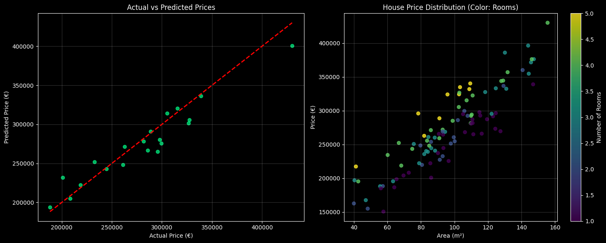

Regresión Lineal
Descripción
Implementación fundamental del algoritmo de Regresión Lineal, tanto desde cero utilizando NumPy para comprender las matemáticas subyacentes (Descenso de Gradiente), como utilizando bibliotecas estándar de la industria como Scikit-Learn.
Características Principales
- Implementación manual de Descenso de Gradiente
- Visualización de la función de coste y convergencia
- Cálculo de métricas de error (MSE, R²)
- Comparación de rendimiento con Scikit-Learn
- Visualización de la recta de regresión y residuos
Tecnologías Utilizadas
El proyecto utiliza Python como lenguaje base. NumPy se emplea para las operaciones matriciales eficientes en la implementación manual. Matplotlib permite la visualización de los datos y los modelos, mientras que Scikit-Learn sirve como referencia para validar los resultados.
Resultados
El modelo implementado logra converger exitosamente a los parámetros óptimos, demostrando un rendimiento idéntico a la implementación de referencia de Scikit-Learn en conjuntos de datos lineales, validando la comprensión profunda del algoritmo.
Ejemplo Interactivo (Notebook)
A continuación se muestra un ejemplo práctico de predicción de precios de viviendas utilizando 3 características: Área, Habitaciones y Antigüedad.
import numpy as np
from sklearn.linear_model import LinearRegression
from sklearn.metrics import r2_score
# 1. Generar Datos Sintéticos (Área, Habitaciones, Edad)
n_samples = 100
X = np.random.rand(n_samples, 3) # Features
# Coeficientes reales: Precio = 2000*Area + 15000*Hab - 500*Edad + Base
true_coef = np.array([2000, 15000, -500])
y = X.dot(true_coef) + 50000 + np.random.normal(0, 15000, n_samples)
# 2. Entrenar Modelo
model = LinearRegression()
model.fit(X, y)
# 3. Evaluar
print(f"Model R² Score: {model.score(X, y):.4f}")
print(f"Coefficients: {model.coef_}")Model R² Score: 0.9035 Coefficients: Area=1954.61, Rooms=13301.47, Age=-545.02 Intercept: 60829.87
